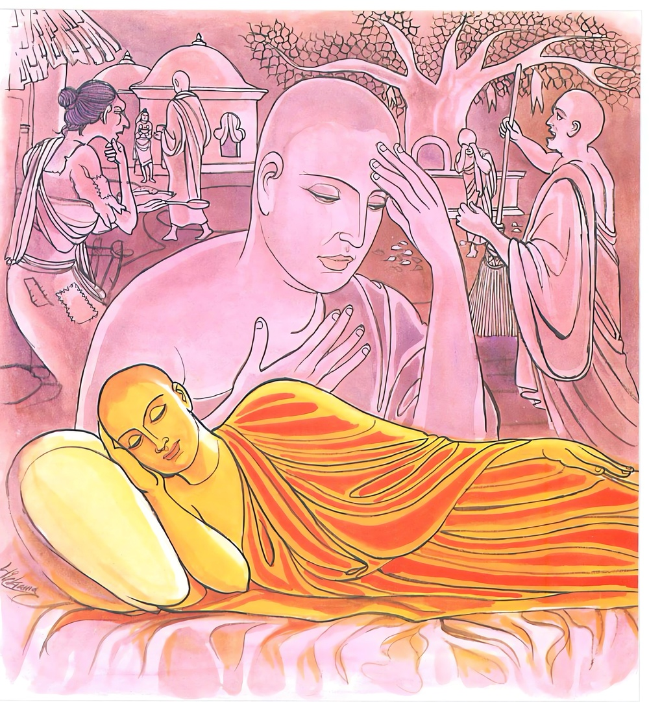
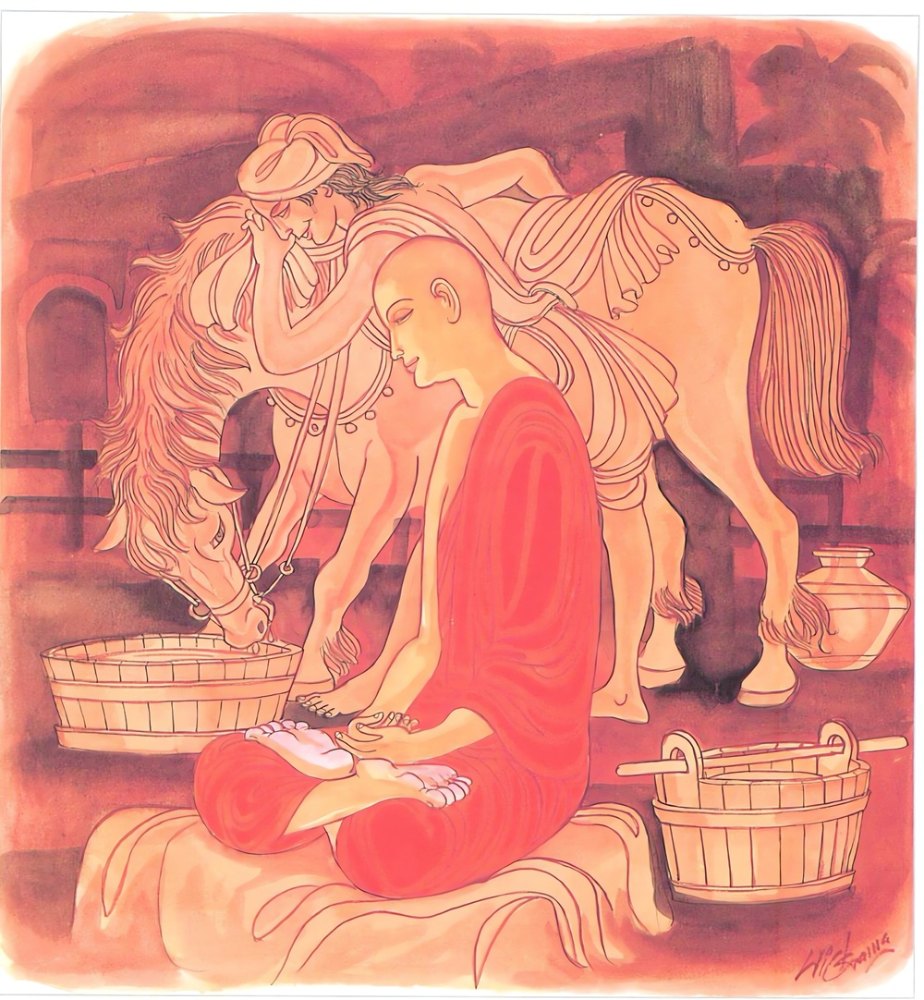

25-10 නඞ්ගලකුල ස්ථවිරයන් වහන්සේ
මෙම කතාව ධම්මපද අටුවාවෙන් ද කියවන්න.
අත්තනා චොදයත්තානං පටිමාසෙ’ත්තමත්තනා
සො අත්තගුත්තො සතිමා සුඛං භික්ඛු විහාහිසි.
යුෂ්මත් තෙමේ තමාට චෝදනා කරව. තෝ ම තා පිරික්සා කරව. මහණ, එසේ වූ තෝ තමා විසින් ම රක්නා ලද්දෙහි ස්මෘතිමත් වූයෙහි (සිවු ඉරියවුහි ම) සුවයෙන් වසන්නෙකි.

අත්තා හි අත්තනො නාථො අත්තා හි අත්තනො ගති
තස්මා සඤ්ඤමයත්තානං අස්සං භද්රං’ව වාණිජො.
යම් හෙයෙකින් තෙමේ තමාගේ පිහිට වේ ද, යම් හෙයෙකින් තෙමේ ම තමාගේ පිළිසරණ වේ ද, එහෙයින් උතුම් අසකු (කවා පොවා) රක්නා අස්වෙළෙඳක්හු මෙන්, (අකුසලුන් සිතැ වැද්දැ නො දී) තමා මොනොවට රක්නේ ය.

දුප්පත් මිනිහෙක් අනුනට බැලමෙහෙ කොට ජීවත් වෙයි. භික්ෂුනමක්, දවසක් කිලිටි දිරූ රෙදි කඩක් ඇඳගෙණ නඟුලක් කර ගසා ගෙණ යන ඒ මිනිහා දැක “ඕය්! තමුසේට මෙසේ අනුනට බැලමෙහෙ කොට ජීවත්වීමට වඩා පැවිදි ව මහණදම් කිරීම නරක දැ”යි ඇසී ය, එවිට ඒ මිනිහා “ස්වාමීනි! ඉතා දුකසේ ජීවත් වන මා කවුරු පැවිදි කෙරෙත් දැ?”යි විචාළේ ය. “ඇයි? එසේ කියන්නෙහි? තමුසේ පැවිදි වන්නට කැමැති නම් මම තමසේ පැවිදි කරන්නෙමි”යි ඒ භික්ෂුනම් කී ය. “ස්වාමීනි! අවසර, හොඳම යි, ඔබවහන්සේ මා පැවිදි කරණ සේක් නම් පැවිදි වන්නෙමි”යි කැමැත්ත දැක් වූ කල්හි, ඒ භික්ෂුනම ඔහු ජේතවනයට ගෙණ ගොස් සියතින් ම නාවා හිසරැවුළු සිඳහැර මලුවෙහි දී ම පැවිදි කොට ඇඳ තුබූ රෙදි මාලුකඩත් නඟුලත් මලුවෙහි කෙළවරක තුබූ ගසක අත්තක තැබ්බ වී ය. පැවිද්දෙන් දවස් කිහිපයක් ගෙවා උපසපන් වූ ඒ මහණ උපසපන් වූ කාලයෙහි දී ම නඞ්ගලකුලස්ථවිර යි ප්රසිද්ධියට ගියේ ය. බුදුරජානන් වහන්සේ ට ලැබුනු ලාභ සත්කාරයෙන් ජීවත් වන ඒ මහණ මද කලක් යත් ම සසුනෙහි උකටලී ව උකටලී බව හැරගත නො හී “සැදැහැවතුන් දෙන සිවුරු වැළඳ ගෙණ හිඳීම නො සුදුසු ය” යි කඩමාලු රඳවා තුබූ ගස මුලට ගොස් “විළිනැත්ත! තෝ මේ කඩමාල්ල දවටා ගෙණ සිවුරු හැර දමා බැලමෙහෙ කොට ජීවත්වනු කැමැත්තෙහි”යි තමන් තමන්ට මෙසේ අවවාද කරත් ම ඇති ව තුබූ උකටලී බව තුනී ව ගියේ ය. එයින් ඔහු පෙරළා ආයේ ද නැවැතත් කීප දවසක් යත් ම උකටලී වකඩමාලු තුබූ තැනට ගොස් ඒ වරත් පෙරසේ ම තමාට තෙමේ අවවාද කෙළේ ය. එ කල්හි අන්ය භික්ෂූන් වහන්සේලා ගස මුලට යන එන මොහු දැක “ඇවැත්නි! නඞ්ගල! කුමක් නිසා නිතර ගස මුලට යහු දැ?”යි ඇසූහ. “ස්වාමීනි! ගුරුන් වෙත යමි”යි හේ කී ය. මෙසේ කියා නැවැත නැවැතත් එහි ගියේ කඩමාල්ල හා නඟුල ම කමටහන් දෙන ගුරුන් කොට ගෙණ රහත් වූයේ ය. භික්ෂූන් වහන්සේලා ඔහු හා කෙළිකවටකම් කරමින් “ඇවැත්නි! නඞ්ගල! තා යන එන මඟ දැන් නො යා යුතු තැනක් මෙන් වල් ගැසී ඇත, අපට පෙණෙනුයේ තා දැන් ගුරුන් වෙත නො යන්නා සේ ය” යි කීවිට “ස්වාමීනි! එසේ ය, බැඳීමක් එක්වීමක් තුබූ දවස් වල මම එහි ගියෙමි, දැන් ඒ බැඳීම් එක්වීම් හැම එකක් සිඳී ගොස් ඇත, එහෙයින් දැන් එහි නො යමි” යි කී ය. භික්ෂූන් වහන්සේලා ඔහුගේ මේ කතාව අසා “මෙ තෙමේ බොරු කියා තමන් රහත් වූ සැටියක් කියා පාන්නේ ය”යි සිතා බුදුරජානන් වහන්සේට නඞ්ගලකුල තෙරුන්ගේ මේ කතාව දන්වාලූහ. එකල්හි බුදුරජානන් වහන්සේ “මහණෙනි! මාගේ පුත් බොරු නො කියන්නේ ය, ඔහු, තෙමේ තමාට චොදනා කොට පැවිදිකිසෙහි මුදුනට පැමිණියේ ය” යි වදාරා මේ ධර්මදේශනාව කළ සේක.
අත්තනා චොදයත්තානං පටිමාසෙථ අත්තනා,
සො අත්තගුත්තො සතිමා සුඛං භික්ඛූ විහාහිසි.
.
අත්තා හි අත්තනො නාථො අත්තා හි අත්තනො ගති,
තස්මා සඤ්ඤමයත්තානං අස්සං භද්රංව වාණිජොති.
තෙමේ ම තමාට චොදනා කරව. තෙමේ ම තමා විමසව. මහණ! එසේ වූ තෝ තමා විසින් ම රක්නාලද්දෙහි. සිහි ඇත්තෙහි සුවසේ වසන්නෙකි. යම්හෙයකින් තෙමේ තමාට පිළිසරණ වේ ද, එහෙයින් උතුම් අසකු රක්නා වෙළඳකු මෙන් මනාකොට රකුව.
අත්තනාය චොදය අත්තානං = තෙමේ තමාට චොදනා කරව.
මහණ! නිවන් පිණිස පවත්නා මේ උතුම් සසුනෙහි පැවිදිව ගෙණ කළ කම් කියූ බස් සිතූ සිතුවිලි යහපත් ද, අයහපත් ද, නිවන් පිණිස පවත්නේ ද, නො පවත්නේ ද, තමාට වැඩ පිණිස වන්නේ ද, නො වන්නේ ද, සගසුව පිණිස වන්නේ ද, නො වෙන්නේ ද, අපාදුක් පිණිස වන්නේ ද, නො වන්නේ දැ යි තෝ ම තට චොදනා කරව.
පටිමාසෙථ අත්තනා = තෙමේ තමා විමසව. පරීක්ෂා කර බලව.
මහණ! වත්පිළිවෙත් කරන්නහුට, බණදහම් උගන්නහුට, කමටහන්හි යෙදෙන්නහුට, දව රෑ දෙක ඉක්ම යේ ද, නැත, එසේ වත්පිළිවෙත් නො කරන්නහුට, බණදහමු නො උගන්නහුට, කමටහන්හි නො යෙදෙන්නහුට, දව රෑ දෙක ඉක්ම යේ දැ යි තෙමේ ම තමා ගැණ විමසා බලව.
සො අත්තගුත්තො සතිමා සුඛං භික්ඛු විහාහිසි = මහණ! එසේ වූ තෝ තමන් විසින් ම රක්නාලද්දෙහි. සිහි ඇත්තෙහි. සුවසේ වසන්නෙකි.
මෙසේ තමන් තමාට අවවාද කරණ කල්හ, තමන් තමන් ගැණ විමසන කල්හි තමන් විසින් ම තෙමේ රක්නා ලද්දේ වේ. සිහි ඇත්තේ වේ. සතර ඉරියව්වෙහි ම සුවසේ වසන්නේ වේ. මෙ තෙමේ ම ‘අත්තගුත්ත’ නම්.
අත්තා හි අත්තනො නාථො අත්තා හි අත්තනො ගති = යම් හෙයකින් තෙමේ තමාට පිහිට ද යම් හෙයකින් තෙමේ තමාට පිළිසරණ ද.
තස්මා සඤ්ඤමය අත්තානං අස්සං භද්රං ඉව වාණිජො = එහෙයින් උතුම් අසකු රක්නා වෙළෙඳකු මෙන් තමා මනා කොට රකුව. දමව. හික්මවා ගණුව.
මෙරමා අත්බවෙහි පිහිටා කුසල් කොට ස්වර්ගය පිහිට කොට ඇත්තකු හෝ මාර්ගය වඩා සාක්ෂාත් කළ ඵල ඇත්තකු හෝ වන්නට නො හැකි ය. එසේ නම් අන් කවර නම් එකෙක් අන් කවර නම් එකක්හට එහි පිහිට වන්නේ ද, පිළිසරණ වන්නේ ද, එහෙයින් තෙමේ ම තමාට පිහිට වේ. තෙමේ ම තමාට පිළිසරණ වේ. උතුම් අශ්වජාතියකු නිසා ලාභ ලබන අස්වෙළෙන්දා ඌට විසම තැන හැසිරෙන්නට නො දී දවසට තෙවරක් නාවා කවා පොවා පිළිදැගුම් කරන්නේ යම්සේ ද, එසේ තෝ ද නූපන් අකුසලයනට උපදනට නො දී පමා බැවින් සිහි මුළායෙන් උපන් අකුසල් දුරු කරමින් තමා රකුව. එකල්හි තට ලොවී ලොවුතුරු සැප සිද්ධ කට හැකි ය. එහෙයින් එසේ කළ යුතු ය.
ධර්මදේශනාවගේ අවසානයෙහි බොහෝ දෙන සෝවන් ඵලාදියට පැමිණියාහු .
නඞ්ගලකුල ස්ථවිරවස්තුව නිමි.